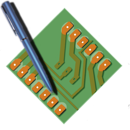

FidoCadJ
FidoCadJ is a simple open-source drawing application for electronic circuits.
- A simple schematic capture with a built-in set of electrical symbols and footprints;
- No-frills 2D vector drawing
- Multiplatform (Windows, macOS, Linux)
-
A versatile graphical editor with user-defined libraries;
- Easy-sharing text format for web forums and blogs;
- Export in several graphical formats: PDF, EPS, SVG, PNG, JPG, and PGF/TikZ for LaTeX;
- User interface in (English, French, Italian, German, Chinese, Spanish, Czech, Japanese, Dutch...)

Follow the development on GitHub
Download the last stable version of FidoCadJ (0.24.8, released on Jun, 13, 2020)
Download the latest beta version of FidoCadJ